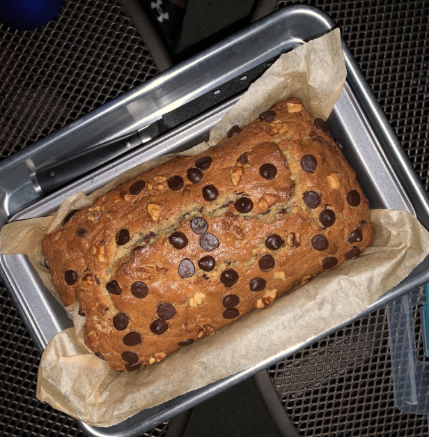

Double Chocolate Chip Cookies
Origin: Michigan
Source: Family Recipie
Category: Dessert

Double chocolate chip cookies are a delicious variation of traditional chocolate chip cookies, with an extra dose of chocolate.
Recipe Ingredients
- Unsalted butter
- Granulated Sugar
- Packed light or dark brown sugar
- Pure vanilla extract
- Semi-sweet chocolate chunks (melted)
- All-purpose flour
- Natural unsweetened cocoa powder
- Baking soda
- Salt
- Semi-sweet chocolate chunks
Recipe Steps
- In a mixing bowl cream together the butter, granulated sugar, and brown sugar
- Add the egg and vanilla extract and beat well
- Add the melted chocolate
- In a separate bowl combine the flour, baking soda, cocoa powder and salt.
- Combine the wet and dry ingredients
- Add the unmelted chocolate chunks.
- Form 15 cookies and place on a baking sheet.
- Cooke for 12 to 13 minutes at 350 degrees.
Chocolate chip banana bread
Origin: American
Source: https://www.delish.com/cooking/recipe-ideas/a43369646/chocolate-chip-banana-bread-recipe/
Category: Dessert
Chocolate chip banana bread is a delicious baked treat that combines the flavors of ripe bananas and chocolate chips in a moist and flavorful bread.
Recipe Ingredients
- Cooking spray
- 2 cups (240 g) all-purpose flour
- 1 tsp. baking soda
- 1/2 tsp. kosher salt
- 1 large egg plus 1 egg yolk
- 1 cup (200 g) granulated sugar
- 1/2 cup (1 stick) unsalted butter, melted
- 1/4 cup sour cream
- 1 tsp. pure vanilla extract
- 3 ripe bananas, mashed
- 1/2 cup chopped toasted walnuts
- 1/2 cup semisweet chocolate chips
Recipe Steps
- Preheat the oven to 350º. Line a 9"-by-5" loaf pan with parchment and grease with cooking spray.
- In a medium bowl, whisk flour, baking soda, and salt.
- In a large bowl, mix egg, egg yolk, granulated sugar, butter, sour cream, and vanilla. Add bananas and stir until combined. Gradually add dry ingredients to banana mixture until just combined.
- Fold in walnuts and chocolate chips and transfer to prepared pan.
- Bake bread until a tester inserted into the center comes out clean, about 1 hour. Let cool 10 minutes in pan, then invert onto a wire rack and let cool completely.
Homemade Mac & Cheese
Origin: Northern Europe
Source: https://www.delish.com/cooking/recipe-ideas/a44763401/mac-and-cheese-recipe/
Category: Main Dish.

Macaroni and cheese, commonly known as mac & cheese, is a comfort food staple that has captured the hearts of people all over the world.
Recipe Ingredients
- Macaroni
- Butter and flour
- Milk
- Cheese
- Seasonings
- Bread crumbs
Recipe Steps
- Preheat oven to 375°. Grease a 13"x9" baking dish with butter.
- In a large pot of boiling salted water, cook macaroni, stirring occasionally, until al dente, 5 to 6 minutes.
- Drain.
- In a large saucepan over medium heat, melt 1 stick butter.
- Sprinkle flour over and cook, stirring, until slightly golden, 2 to 3 minutes.
- Pour in milk and whisk until combined.
- Add mustard powder; season with salt and pepper.
- Bring to a simmer over medium-high heat and cook, stirring, until sauce starts to thicken, about 2 minutes.
- Remove pan from heat and whisk in cheddar, Gruyère, and 1 cup Parmesan until melted and smooth.
- Stir in macaroni and transfer to the prepared dish.
- In a small bowl, combine panko, oil, and remaining 1/2 cup Parmesan.
- Sprinkle over macaroni; season with more pepper.
- Bake mac and cheese until bubbly and golden, 25 to 30 minutes.
- Let cool for 10 minutes.